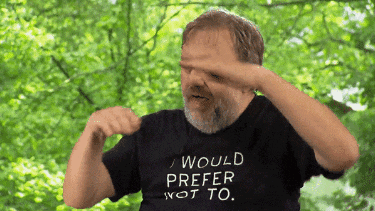

Bạn đang ở trong khu rừng
và khu rừng này to khổng lồ
_ ____
,-"_`--._;,--.`.
_,-.',-* "-. * `'_
,--" Y ) ) ,-*" `.__,--._ ,.
,' _ `-. ," /_; ___ __ `._,'(_
_.---.' _,-/ /. \ : "--.`-" `. __ `.
,--._,-" __ / \: : : \ _ \ /,-" `. \
,'.-. _,.-" ) : ` \ `.; ,-' `. \ (( `. \
(( `*" ,-.; ,' , : : \ : ` ) )
`' /,.__; ( `-...__| ; './ `-`
` `-...__ ( _,=-. Ƹ̵̡Ӝ̵̨̄Ʒ
`. `-,-"_,--'
Ƹ̵̡Ӝ̵̨̄Ʒ `. ,-"
| /
| :
Ƹ̵̡Ӝ̵̨̄Ʒ | |
| |
| |
| |
| |
| |
| |
| |
| |
| |
| |
| :
: `.
/ Ƹ̵̡Ӝ̵̨̄Ʒ \
_,' .
__,-" '._____ SSt
∑ọi thứ đều rẽ nhánh
"Thiên nhiên là một chuỗi thảm hoạ không thể tưởng tượng được."

Vườn rừng giữa thành thị
Đây là trang để tạo ra những sự kết nối, để chia sẻ các nhánh cây đã và đang phát triển mà bạn chưa biết. Các nhánh cây từ cộng đồng cuộc sống về đêm tại khu rừng giữa thành thị luôn tiến bộ và phát triển. Các quán clubs, bars và các nơi giải trí về đêm tại Sài Gòn nổi lên và xuống dốc là chuyện bình thường, ngay cả khi không có COVID cản trở khiến mọi thứ trở nên khó khăn hơn. Dưới đây là một vài lịch sử của những nơi tổ chức các chủ đề, sự kiện hot nhất trong cuộc sống về đêm và họ đã để lại dấu ấn sâu đậm tại thành phố này trong vài năm qua . Và một số nơi vẫn đang tiếp tục phát triển MẠNH MẼ!
- 289e -
Một quán bar nghệ thuật bí ẩn, đây thường là nơi tụ họp của những người không bình thường, kỳ lạ và hiếm có – tổ chức các sự kiện, phục vụ cocktails và đi ngược lại với nghệ thuật đương đại tại Sài Gòn.
- ARCAN -
Ban đầu được gọi 'Asian Rave Connection', hệ thống âm thanh đỉnh, và toả ra năng lượng tuyệt vời, dù tồn tại trong khoảng thời gian ngắn, nhưng đủ để tạo ra sức ảnh hưởng – và bây giờ là sân minigolf.
- ERROR:102 -
Cú đánh hạng nặng, một trong những super clubs tồn tại trong khoảng thời gian ngắn ở Sài Gòn, nằm ngay trên con đường khét tiếng của Bùi Viện, vươn đến sự nổi tiếng trong một khoảng thời gian rất đẹp nằm khoảng giữa đợt Covid thứ nhất đến đợt Covid thứ tư của Việt Nam.
- GenderFunk -
Là một tập hợp của những nghệ sĩ drag, và các queerdo, tổ chức các buổi tiệc party dành cho LGBT+ ‘+ TRAI GÁI THẲNG’, và tôn vinh văn hoá queer ở Sài Gòn và nhiều hơn thế nữa.
- Nhạc Gãy -
Tập hợp của nghệ thuật, những người đam mê rave, vượt qua ranh giới của văn hoá cuộc sống về đêm tại Việt Nam, đặt sự quan tâm và lòng trắc ẩn đặc biệt là mental health dành cho những các partygoers và hơn thế nữa.
- Observatory -
Một trong những hộp đêm nổi tiếng nhất, có thể nói là 'nổi tiếng thế giới' ở Sài Gòn, đã thay đổi địa điểm một vài lần, nhưng vẫn giữ nguyên danh tiếng suốt ngần ấy năm.
---THÊM Những câu chuyện về Sài Gòn (và đã biến mất) THÊM---
Còn rất rất nhiềuuuuuuu các nơi và các buổi tiệc parties, những tập hợp và các cộng đồng, đã tồn tại trong khoảng thời gian ngắn hoặc đã được thành lập trong thời gian lâu, đang sống hoặc đã chết, rất có ý nghĩa đối với biết bao người Sài Gòn. Vẫn còn rất nhiều nơi vẫn đang hoạt động, ẩn nấu bến dưới đám mấy COVID đang bao trùm lấy chúng ta ở thời điểm kỳ lạ này. Và tất nhiên, sẽ còn nhiều em bé nữa, hoặc chưa ra đời. Đây là trang để chia sẻ những câu chuyện bất hữu đó.
Nếu bạn có những câu chuyện để chia sẻ, xin hay liên hệ với bọn mình!
Rừng Rậm THẬT SỰ
Đây không phải là một nguồn tài nguyên, mà là một lời nhắc nhở, rừng rậm đã và đang bị đe dọa. Rừng rậm thực sự không cần bạn tồn tại, trên thực tế, nó cần bạn không tồn tại để có thể phát triển một cách thịnh vượng. Và tất nhiên, thiên nhiên sẽ chiến thắng trong cuộc chiến giữa loài người và thiên nhiên. Nhưng nếu bạn muốn dành một chút thời gian để suy nghĩ làm thể nào để giúp và cải thiện thiên nhiên, hãy kết nối với nó. Bỏ điện thoại xuống. Và về với thiên nhiên. Đi vào rừng. Hãy cho bà ta thấy rằng bạn yêu bà ta, nếu bạn đủ may mắn, bà ta có thể chia sẻ cho bạn một chút trí tuệ của bà.
DISCLAIMER ALERT
Rừng rậm thì rộng lớn, nhưng những con khỉ thì ít. Mất bao lâu để một con khỉ đánh máy ra các bài hoàn chỉnh của Shakespeare cuộc sống về đêm Sài Gòn, bằng ngôn ngữ của html? Saigon Community Radio \..SG_CR../ ichỉ chia sẻ lịch sử một cách cô động ... bọn mình cần sự giúp đỡ của bạn để hoàn thành phần kể chuyện này. Hãy cho bọn mình biết con khỉ cần nhập những gì và bọn mình sẽ cố gắng hết sức để hướng chúng đi đúng hướng.
ở yên bên trong \..SG_CR../
- Đi tới:= nhà vệ sinh.
- Đi tới:= thu viện.
- Đi tới:= ban công.
- Khám phá:= khu rừng.
- Khám phá:= k h ô n g _ g i a n.

Không có nơi nào như ở nhà.